A ênfase aqui será em como funções funcionam. O que acontece quando uma função é chamada ? A que variável um nome está se referenciando?
O tratamento em tempo de execução de um nome de variável em C é simples: um nome de variável é ou uma variável local (a função) ou uma variável global (definida fora de qualquer função).
Em C, todas as funções tem que ser definidas. Para cada função deve ser definido um protótipo. O protótipo é escrito fora de qualquer função. Desta forma, nomes de funções são visíveis para todas as outras funções que podem então invocá-las. A função main() é especial: é onde a execução do programa começa, e o protótipo de main() pode ser omitido.
Uma definição de função consiste de quatro partes:
{ }) contendo definição de variáveis e outras
sentenças. Em C, não se pode definir uma função dentro de outra.
Para funções com argumentos: uma função é chamada dando o seu nome e uma lista de argumentos (expressões que são avaliadas e cujos valores são atribuídos para os correspondentes parâmetros formais da função).
Por exemplo, suponha que triangarea() e circ area() sejam funções que calculam a área de triângulos e círculos, respectivamente. Seus protótipos são:
float triang_area(float , float); float circ_area(float);
Estas funções podem chamadas de dentro de outras funções. Os argumentos reais com os quais elas são chamadas podem ser expressões constantes, or variáveis locais, ou qualquer expressão cuja avaliação resulte em valores do tipo float (inteiros são convertidos para float da mesma forma que ocorre com atribuição de inteiros para variáveis do tipo float). Alguns exemplos de chamadas:
float area2, area3, area4, area5, base, altura, raio;
printf("area do triangulo = ", triang_area(0.03, 1.25));
base = 0.03;
altura = 1.25;
area2 = triang_area(base, altura);
area3 = triang_area(1.6, altura);
area4 = triang_area( 0.03 + base, 2 * altura);
raio = base + altura;
area5 = triang_area(raio, circ_area(raio));
A última sentença do exemplo acima atribui a variável area5 a área de um triângulo cuja base é igual ao valor da variável raio e a altura é igual a area de um círculo de raio igual ao valor da variável raio.
Quando um programa é executado, somente uma única função tem o controle em determinado momento. Falaremos mais sobre o que acontece quando uma função é chamada mais tarde nestas notas de aula.
Variáveis locais que são definidas dentro da função devem ser inicializadas com algum valor antes de serem usadas. Caso contrário, o seu valor é indefinido.
Já que parâmetros formais (argumentos) são variáveis locais da função, eles podem ser usados no corpo da função. Eles não devem ser definidos dentro da função (sua definição já está no cabeçalho da função). Os parâmetros formais não precisam ser inicializados. Seus valores são fornecidos pelo chamador da função através dos argumentos reais.
Considere o seguinte exemplo:
/***************************************************************** * Um programa que calcula a area de triangulos e circulos. * A base, altura e raio sao fornecidos pelo usuario. * A saida do programa e a area do triangulo e circulo. *****************************************************************/ #include <stdio.h> #define PI 3.1415 /******************* prototipos *******************/ float triang_area(float, float); float circ_area(float); /******************* definicao de funcoes *******************/ main(void) { /* definicao das variaveis locais */ float base, altura, raio; /* dialogo de entrada */ printf("\nEntre com a base e altura do triangulo: "); scanf("%f %f", &base, &altura); printf("\nEntre com o raio do circulo: "); scanf("%f", &raio); /* chama as funcoes e imprime o resultado */ printf("Area do triagulo com base e altura %f e %f = %f\n", base, altura, triang_area(base, altura)); printf("Area do circulo com raio %f = %f\n", raio, circ_area(raio)); } /***************************************************************** * funcao: triang_area * calcula a area de um triangulo dada a base e altura * Entrada: base e altura do triangulo * Saida: area do triangulo *****************************************************************/ float triang_area(float base, float alt) { return 0.5*base*alt; } /***************************************************************** * funcao: circ_area * calcula a area de um circulo dado o raio * Entrada: raio do circulo * Saida: area do circulo *****************************************************************/ float circ_area(float r) { return PI*r*r; }
Este programa C consiste de três funções, main(), triang_area(), e circ_area(). main() tem variáveis locais chamadas base, altura e raio; triang_area() tem como variáveis locai seus parâmetros formais, base e alt; circ_area() tem como variável local seu parâmetro formal r.
Em geral, uma variável local só existe durante a execução da função na qual ela está definida. Portanto, variáveis locais existem desde o momento que a função é chamada até o momento em que a função é completada. Tais variáveis são chamadas de automatic. Em C, uma variável pode ser definida como sendo static. Neste caso, uma variável local não é visível de fora do corpo da função, mas ela não é destruída no final da função como variáveis automáticas são. Cada vez que a função é chamada, o valor das variáveis static é o valor final da variável da chamada anterior.
Até este momento, todas as variáveis que vimos são definidas dentro de funções (no corpo da função ou como parâmetros formais). é possível também definir variáveis fora das funções. Tais variáveis são chamadas de variáveis globais ou externas. O formato da definição de variáveis globais é o mesmo da definição de variáveis locais. A única diferença é onde a variável é definida: variáveis globais são definidas fora de qualquer função. Ao contrário das variáveis locais, variáveis globais podem ser vistas por todas as funções definidas após a definição das variáveis globais.
Nós temos usado declarações ``globais'' este tempo todo - por exemplo, as declarações de protótipos de funções. Elas são declaradas fora de qualquer função e podem ser vistas por qualquer função que estão após sua declaração.
No exemplo seguinte, uma variável saldo que é atualizada por três funções diferentes é definida como uma variável global. As três funções que a atualizam não chamam uma a outra.
/***************************************************************** * Caixa eletronico simples * o saldo e o valor a ser alterado e entrado pelo usuario * a saida do programa e' o saldo atualizado, incluindo juros *****************************************************************/ #include <stdio.h> #define JUROS 0.07 /******************* prototipos *******************/ void credito(float); void debito(float); void juros(void); /******************* globais *******************/ float saldo; /* saldo atual; * Alterada em: credito(), debito(), juros(), main() * Lida em: */ /*********************** definicao de funcoes ***********************/ main(void) { float valor; /* valor a ser depositado/retirado */ printf("Entre com o saldo atual: "); scanf("%f",&saldo); printf("Deposito: "); scanf("%f", &valor); credito(valor); printf("Retirada: "); scanf("%f", &valor); debito(valor); juros(); printf("Juros 7%%.\n"); printf("Saldo = : %.2f\n ", saldo); } /***************************************************************** * Deposita um valor; atualiza a variavel global saldo * Entrada: valor a ser depositado * Saida: nenhum *****************************************************************/ void credito(float val) { saldo += val; } /***************************************************************** * Debita um valor; atualiza a variavel global saldo * Entrada: valor a ser debitado * Saida: nenhum *****************************************************************/ void debito(float val) { saldo -= val; } /***************************************************************** * Acumula juros; atualiza a variavel global saldo; juros: RATE * Entrada: nenhuma * Saida: nenhuma *****************************************************************/ void juros(void) { saldo += (saldo * JUROS); }
Um exemplo de execução do programa:
Entre com o saldo atual: 1000
Deposito: 200
Retirada: 80
Juros 7%.
Saldo = 1198.40
Variáveis globais devem ser usadas SOMENTE quando muitas funções usam muito as mesmas variáveis. No entanto, o uso de variáveis globais é perigoso (e não recomendado) porque a modularidade do programa pode ser afetada. Uma variável global pode ser alterada de dentro de uma função, e esta alteração pode influir no resultado de uma outra função, tornando-a incorreta (em um exemplo dado posteriormente nestas notas, duas chamadas a função soma_y() com o mesmo argumento (zero) produz resultados diferentes, 100 e 300).
Quando variáveis globais são utilizadas, deve ser dado a elas nomes descritivos e um breve comentário qual a finalidade da variável e quais funções a acessam.
Neste curso, você utilizará variáveis globais SOMENTE QUANDO FOR DADO PERMISSãO PARA FAZê-LO. Caso contrário, não é permitido utilizá-las (ou seja, serão descontados pontos).
Como já discutimos anteriormente, uma variável é uma abstração de dados que nós usamos em um programa. A variável representa um endereço de memória onde os valores são armazenados. Durante a execução do programa, valores diferentes poder ser armazenados neste endereço. Quando uma variável é definida, o nome da variável é ``atrelada'' a um endereço específico na memória. Até este momento, já discutimos o que é o nome de uma variável, seu endereço, tipo e valor. Outra característica que apresentaresmo agora é o escopo. O escopo de uma variável refere-se a parte do programa onde podemos utilizar a variável. Em outras, palavras, uma variável é ``visível'' dentro do seu escopo.
O escopo de uma variável local é a função na qual ela é definida. Os parâmetros formais de uma função também são tratados como variáveis locais.
O escopo de uma variável global é a porção do programa depois da definição da variável global (a partir do ponto onde ela é definida até o final do programa).
Se o nome de uma variável global é idêntico a uma variável local de uma função, então dentro desta função em particular, o nome refere-se a variável local. (Embora tais conflitos devem ser evitados para evitar confusão).
Por exemplo, considere o seguinte programa:
int valor = 3; /* definicao da variavel global */
main()
{
/* definicao local de valor */
int valor = 4;
printf("%d\n", valor);
}
A saída do programa acima será 4 já que valor refere-se a definição local.
Considere outro exemplo:
#include <stdio.h> int soma_y(int); int soma_yy(int); int y = 100; /* variavel global */ main(void) { int z = 0; /* variavel local */ printf("%d\n", soma_y(z)); printf("%d\n", soma_yy(z)); printf("%d\n", soma_y(z)); } int soma_y(int x) { return x + y; /* x e' variavel local, y e' global */ } int soma_yy(int x) { y = 300; /* y e' variavel global */ return x + y; /* x e' variavel local */ }
Vamos seguir a execução deste programa. Primeiro, a variável global y é criada e inicializada com 100. Então, a execução da função main() comeca: é alocado espaço na memória para a variável local z. Esta variável é inicializada com 0. Considere a primeira sentença printf():
printf("%d\n", soma_y(z));
Esta é uma chamada para a função da biblioteca padrão printf().
Os parâmetros reais desta chamada são o string "%d\n" e a
expressão soma_y(z). A última expressão é a chamada da função
soma_y(). O valor desta expressão é o resultado retornado por
soma_y(). Qual o resultado? A função soma_y é chamada
com o parâmetro real z. Como z = 0, este é o valor que
será passado para a função soma_y; o 0 é copiado para o
parâmetro formal x da função soma_y(). Portanto, durante
a excução da primeira chamada a função soma_y(), o valor da
expressão x + y será 0 + 100, que é 100. Portanto, o valor
da primeira chamada soma_ y(z) é 100, e este número será
impresso com o primeiro printf() em main(). Agora
considere a segunda senteça:
printf("%d\n", soma_yy(z));
Quando a função soma_yy(z) é chamada, o valor de z (a
variável local z) ainda é 0, portanto novamente 0 é
copiado para o parâmetro formal int x da função soma_yy.
Quando a execu,aão de soma_yy() começa, ela primeiro troca o
valor da variável global y para 300 e então retorna o valor
de x + y, que neste caso é 0 + 300. Portanto, o valor
desta chamada a soma_yy(z) é 300, e este número será
impresso pelo segundo printf() em main().
Por último,
considere a terceira senteça:
printf("%d\n", soma_y(z));
Quando a função soma_y(z) é chamada, o valor de z ainda é
0, portanto, 0 é copiada para o parâmetro formal int
x da função soma_y(). Quando soma_ y() é executada pela
segunda vez, a variável global y foi modificada para 300,
portanto o valor de x + y é 0 + 300. Portanto, o valor da
chamada soma_yy(z) é 300, e este número será impresso pelo
terceiro printf() em main().
Portanto, a saída da execução deste programa será
100
300
300
Neste exemplo, o escopo da variável global y é o programa todo.
O escopo da variável local z, definida dentro de maio é o
corpo da função main. O escopo do parâmetro formal x da
função soma_y é o corpo de soma_y. O escopo do parâmetro
formal x da função soma_yy é o corpo de soma_yy.
Aqui apresentamos um exemplo de uma função mais complicada. Esta função calcula a ``raiz quadrada inteira'' de um número (o maior inteiro menor ou igual a raiz quadrada do número).
Este programa usa o algoritmo ``divide e calcula média'' (uma aplicação do método de Newton). Ele executa o seguinte:
Dado 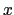, achar 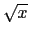 computando sucessivamente
Os valores de 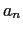 convergem para a medida que 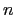 cresce.
Para achar a raiz quadrada inteira, este algoritmo é repetido até que
Por exemplo, para achar a raiz quadrada inteira de 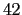 (usando divisão inteira que trunca a parte fracional do número)
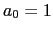, 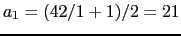, 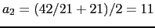, 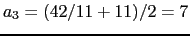, 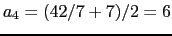.
Uma vez que 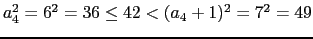, o processo termina e a resposta é 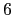.
(Não é necessário você entender por que este algoritmo funciona - portanto não se preocupe se não conseguir entendê-lo)
int raizInteira(int); /* prototipo */ /************************************************************** * function: raizInteira(x) * acao: dado x, retorna a raiz quadrada inteira de x * in: inteiro positivo x * out: raiz quadrada inteira de x * suposicoes: x >= 0 * algoritmo: metodo de dividr e calcular media: comecando com * um palpite de 1, o proximo palpite e' calculado como * (x/palpite_ant + palpite_ant)/2. Isso e' repetido * ate' que palpite^2 <= x < (palpite+1)^2 ***************************************************************/ int raizInteira(int x) { int palpite = 1; /* Continue ate' que o palpite esteja correto */ while (!(x >= palpite*palpite && x < (palpite+1)*(palpite+1))) { /* Calcula proximo palpite */ palpite = (x/palpite + palpite) / 2; } return palpite; }
Note que usando a lei de DeMorgan, podemos re-escrever a expressão teste do while em uma forma equivalente:
x < palpite * palpite || x >= (palpite + 1) * (palpite + 1)
Deve estar claro neste ponto a diferenca entre ação e algoritmo. Uma pessoa que quer usar esta função precisa saber somente a ação, não o algoritmo. é também importante especificar os dados que são esperados pela função e retornados por ela para outras pessoas poderem usá-la. As suposições devem esclarecer as restrições da função sobre quando a função pode falhar ou produzir resultados errados. Neste caso, um número negativo produziria um erro, já que números negativos não possuem raiz quadrada.
Não há necessidade de ir em muitos detalhes em qualquer parte da documentação da função. Embora ela deva conter informação suficiente para que alguém (que não possa ver o código) saber utilizá-la. Detalhes sobre implementação e detalhes menores sobre o algoritmo devem ser colocados como comentários no próprio código.